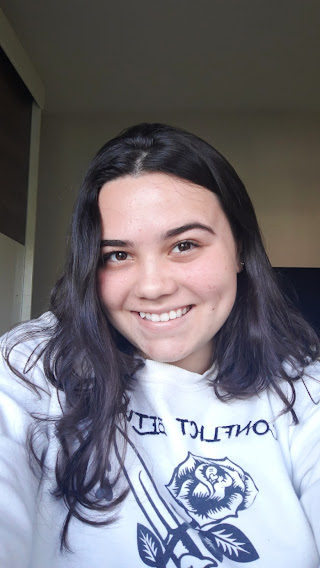
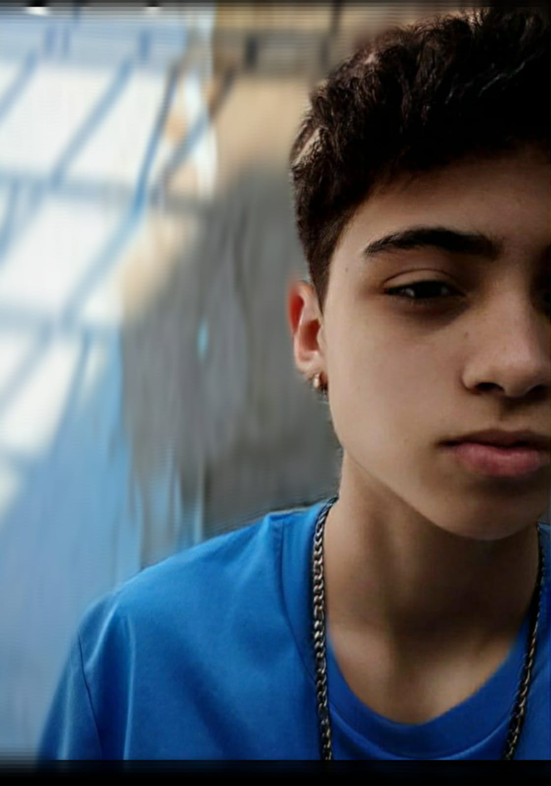

Como surgimos?
A iniciativa #TeuFuturo Delas é uma ramificação do #Teu Futuro que oferece formação técnica e comportamental, conectando estudantes de ensino médio com vagas de estágio ou primeiro emprego em empresas que demandam profissionais da área da TI.
O teu futuro delas tem como objetivo promover iniciativas que mudem o cenário atual de desigualdade na área da ciências da computação trazendo mais mulheres para o mercado de trabalho.
Há um déficit de mão de obra feminina na área da tecnologia de informação. No Brasil, o dado oficial mais recente é do Censo de 2010, quando o IBGE apurou que 520 mil pessoas atuavam no setor de TI, sendo que as mulheres representavam um quarto do total. Além disso, de acordo com a Sociedade Brasileira de Computação, apenas 15% dos estudantes de cursos de Ciência da Computação são mulheres e 79% das estudantes desistem da área no primeiro ano. Logo, surgiu a necessidade de criar um espaço de incentivo só #delas.
Conheça quem está por trás do projeto:
A equipe do #Teu Futuro Delas conta com a participação
de exelentes profissionais.
Conta também com professores
qualificados como o programador Fernando Posser
e a psicóloga Eduarda Valduga Donadel e os estagiários
Gabriela Favero e Reinaldo Cerqueira.
O que dizem sobre o projeto:
-
"O TeuFuturo Delas é uma iniciativa fundamental para trazer mais igualdade nas relações de gênero dentro da computação. O mais bonito desta iniciativa é que ela foi proposta por uma embaixadora do TeuFuturo, ex estudante do ano de 2019. Esta especificidade faz toda diferença pois mostra a força do projeto TeuFuturo, que permite que os próprios jovens participem da expansão do projeto, trazendo novas direções como esta que apesar de ser um dos fundamentos do projeto não tinha tido tanta organização e propostas como agora após a embaixadora Isaura Koch assumir este desenvolvimento. Para que tenhamos igualdade entre gêneros na computação precisamos que mais projetos nesta vertente sejam criados."
- Hairlaine Treici Freitas
-
"Hoje presenciamos um cenário com participação baixíssima de mulheres na tecnologia, tendo em vista que, apenas 15% dos estudantes de cursos de Ciência da Computação são mulheres (Sociedade Brasileira de Computação) e 20% dos profissionais que atuam no mercado de TI são mulheres (IBGE). O #TeuFuturo Delas é importante neste contexto, para ofertar um ambiente seguro de troca, e para munir meninas de ferramentas, como as bolsas de estudo, para que elas iniciem e continuem com a carreira tecnológica, promovendo assim a participação feminina na TI.
Além de promover conversas que propiciam melhoria nos ambientes acadêmicos e empresariais para receber essa diversidade de estudantes. A diversidade também é importante para as empresas, as companhias com maior diversidade de gênero têm 21% mais chances de apresentar resultados acima da média do mercado do que as empresas com menor diversidade do grupo.
Sobre a minha experiência com o #TeuFuturo: Eu participei do #TeuFuturo no ano de 2018, e durante o programa, muito além do técnico pude desenvolver habilidades humanas: comunicação, empatia, liderança, tudo isso em conjunto com a imersão no dia a dia do profissional de TI, que o #TeuFuturo possibilitou, através de visitas a empresas, eventos acadêmicos e projetos práticos. Todos estes aspectos foram essenciais para meu desenvolvimento profissional.
Além disso, foi em um evento disponibilizado pelo #TeuFuturo com a IMED e empresas parceiras, que tive meu primeiro contato com o mercado de trabalho, e, posteriormente iniciei minha carreira em uma das empresas participantes do evento. Também foi graças ao programa que consegui ingressar na graduação através de uma bolsa parcial."- Isaura Koch
-
"O #TeuFuturo é um lugar incrível aonde podemos nos desenvolver e aprender, mas o melhor de tudo, nos divertimos muito enquanto fazemos isso. É um momento de união em busca de um objetivo em comum, e nisso entra o #TeuFuturo delas, que nos possibilita unir ainda mais as gurias nessa incrível área da programação. Todos juntos nessa luta é o mais importante"
- Eduarda Donadel
- Conheça a equipe do site:
-
Bruna Hundtermaker
Email:brunasena6a@gmail.com
-
Emellyn Rosa Da Silva
Email:emellynrosa2003@gmail.com
-
Laura Mesquita Bruel
Email:lauramesquitabruel123@gmail.com
-
Marina Rael Marques
Email:marina.raelmarques@gmail.com
-
Natalie dos Santos Lopes
Email:nataliedossantoslopes@gmail.com
-
Thales Dias Prudêncio
Email:thalesdias36291@gmail.com